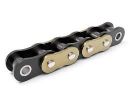
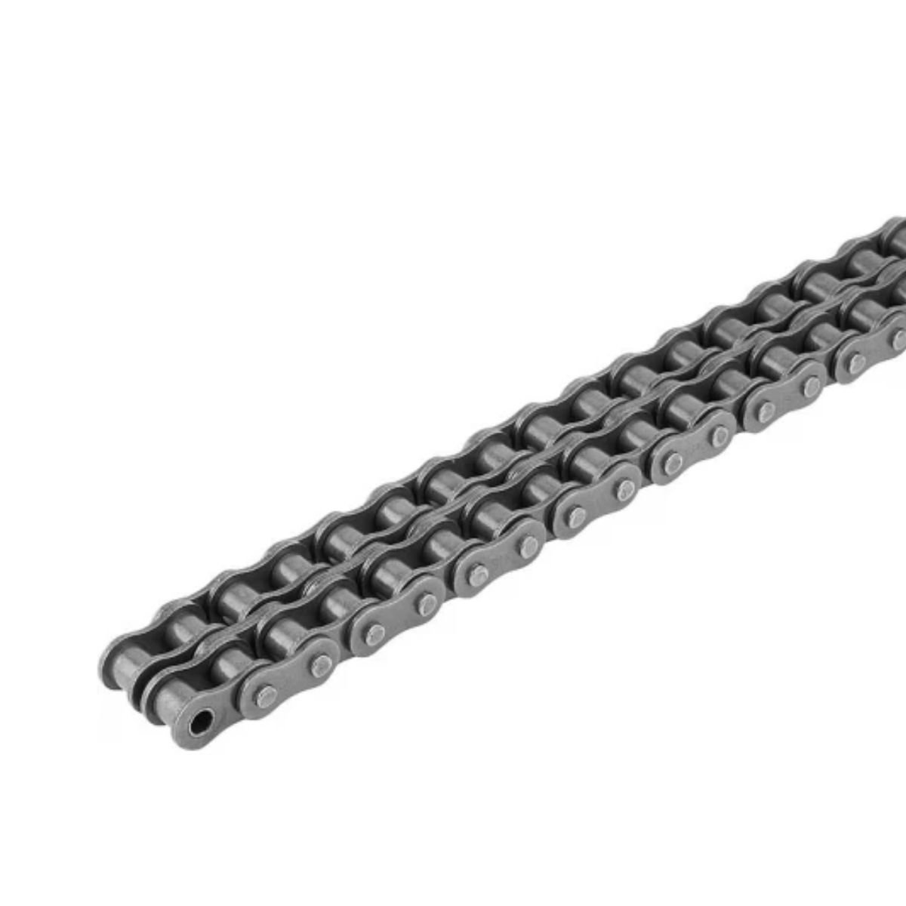
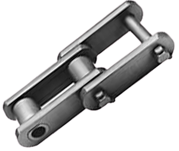
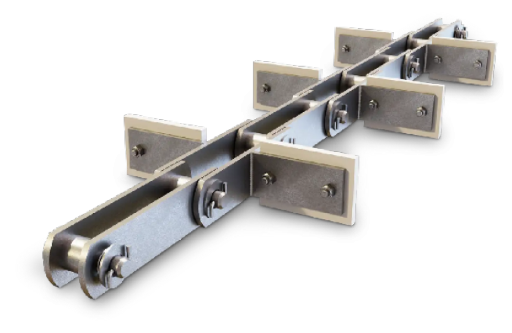

Sistemas de Transmissão

O que são os sistemas de transmissão?
Os sistemas de transmissão são conjuntos de componentes mecânicos responsáveis por transferir potência e movimento de um eixo para outro, permitindo o controle da velocidade e torque em máquinas e veículos. Eles desempenham um papel fundamental na eficiência e desempenho dos equipamentos, garantindo a transmissão adequada de energia para atender às necessidades específicas de cada aplicação.
Composição dos sistemas de transmissão
Componentes de um sistema de transmissão

Os sistemas de transmissão são compostos por diversos elementos, incluindo engrenagens, correias, correntes, polias e acoplamentos. Cada componente desempenha um papel específico na transferência de potência e controle do movimento, e a escolha adequada desses elementos é crucial para o desempenho e a durabilidade do sistema.
Modelos de sistemas de transmissão
Os principais tipos incluem:
- Sistemas de transmissão por engrenagens: Utilizam engrenagens para transferir potência e controle do movimento, oferecendo alta eficiência e durabilidade.
- Sistemas de transmissão por correias: Utilizam correias para transmitir potência, sendo ideais para aplicações com distância média entre os eixos.
- Sistemas de transmissão por correntes: Utilizam correntes para transmitir potência, proporcionando uma transmissão mais robusta e adequada para cargas pesadas.
- Sistema de transmissão por acoplamento: Projetados para acomodar desalinhamento entre os eixos, garantindo desempenho confiável mesmo em condições adversas.
- Sistemas de transmissão por eixos: Utilizam eixos para transferir potência e controle do movimento, sendo adequados para aplicações que exigem alta precisão e rigidez.
- Sistemas de transmissão por cardan: Utilizam juntas universais para transmitir potência entre eixos que não estão alinhados, sendo comuns em veículos e máquinas agrícolas.
- Sistemas de transmissão por chavetas: Utilizam chavetas para conectar componentes e transmitir potência, sendo adequados para aplicações que requerem fácil montagem e desmontagem.
Sistemas de transmissão por engrenagens
Os sistemas de transmissão por engrenagens são amplamente utilizados em diversas aplicações devido à sua alta eficiência e durabilidade. Eles consistem em um conjunto de engrenagens que se encaixam para transferir potência e controle do movimento entre os eixos. A escolha do tipo de engrenagem depende das necessidades específicas da aplicação, incluindo a relação de transmissão, a carga e a velocidade.
Tipos de engrenagens

Engrenagem cilíndrica de dentes retos

Engrenagem helicoidal

Engrenagem cônica

Engrenagem interna

Engrenagem planetária

Engrenagem cremalheira
Sistemas de transmissão por Correias
Os sistemas de transmissão por correias consistem em um conjunto de correias que transferem potência e controle do movimento entre os eixos. A escolha do tipo de correia, como correias planas, trapezoidais ou sincronizadas, depende das necessidades da aplicação.
Tipos de correias


Correia plana
- Aplicação em transmissões de baixa potência
- Alta eficiência em distâncias curtas


Correia em V (trapezoidal)
- Aplicação em transmissões de média potência
- Boa resistência ao desgaste
- Formato em "V"


Correia dentada (sincronizada)
- Aplicação em transmissões de alta potência
- Alta precisão na transmissão de movimento


Correia Poly-V (multicanal)
- Aplicação em transmissões de média potência
- Capacidade de transmissão de alta potência
- Possui vários "V"


Correia redonda
- Aplicação em transmissões de baixa potência
- Boa flexibilidade


Correia variadora
- Aplicação em transmissões de média potência
- Capacidade de ajuste de velocidade
Sistemas de transmissão por Correntes
Os sistemas de transmissão por correntes consistem em um conjunto de correntes que transferem potência e controle do movimento entre os eixos. A escolha do tipo de corrente depende das necessidades da aplicação, incluindo a relação de transmissão, a carga e a velocidade.

Corrente comum
Também conhecida como corrente de rolos, é utilizada em
transmissões de média potência,
oferecendo boa resistência ao desgaste.
- Transportadores
- Máquinas industriais
Aplicações

Corrente silenciosa
Também chamada de corrente dentada, tem menor
ruído, funcionamento suave e alta velocidade.
- Transportadores
- Máquinas industriais
Aplicações

Corrente dupla
Também conhecida como corrente de rolos,
é utilizada em transmissões de média potência,
oferecendo boa resistência ao desgaste.
- sistemas de sincronismo
- Equipamentos de alta velocidade
- Máquinas com ncessidade baixo ruído
Aplicações

Corrente engenharia
Também conhecida como corrente de rolos,
é utilizada em transmissões de média potência,
oferecendo boa resistência ao desgaste.
- Transportadores
- Máquinas industriais
Aplicações

Corrente transportadora
Também conhecida como corrente de rolos,
é utilizada em transmissões de média potência,
oferecendo boa resistência ao desgaste.
- Transportadores
- Máquinas industriais
Aplicações

Corrente folha
Também conhecida como corrente de rolos,
é utilizada em transmissões de média potência,
oferecendo boa resistência ao desgaste.
- Transportadores
- Máquinas industriais
Aplicações
Sistemas de transmissão por Acoplamento
Os sistemas de transmissão por acoplamento consistem em acoplamentos que transferem potência entre os eixos. A escolha do tipo de acoplamento, como mecânicos, hidráulicos ou pneumáticos, depende das necessidades da aplicação.
Sistemas de transmissão por Eixos
Os sistemas de transmissão por eixos consistem em eixos que transferem potência entre as peças. A escolha do tipo de eixo, como cilíndricos, cônicos ou helicoidais, depende das necessidades da aplicação.
Sistemas de transmissão por Cardan
Os sistemas de transmissão por cardan consistem em cardans que transferem potência entre eixos não alinhados. A escolha entre cardans simples ou duplos depende das necessidades da aplicação.
Sistemas de transmissão por Chavetas
Os sistemas de transmissão por chavetas consistem em chavetas que conectam componentes e transferem potência entre os eixos. A escolha do tipo de chaveta, como retas, curvas ou helicoidais, depende das necessidades da aplicação.